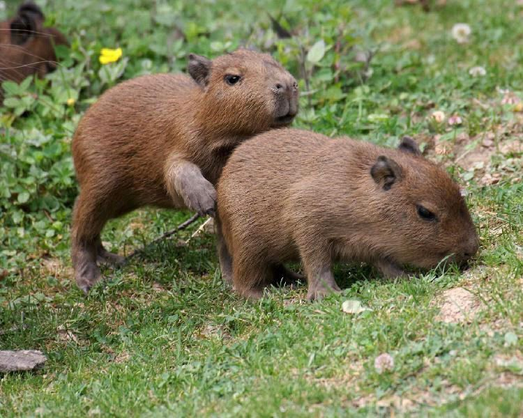

Distribución Geográfica
Los capibaras tienen una distribución geográfica bastante amplia.
Son comunes en la mayoría de los países de América del Sur, excluyendo a Chile. Algunos países destacados incluyen Brasil, Paraguay, Colombia, Argentina y Perú.
¿Territoriales?
Estos roedores son muy sociales y viven en grupos de tamaño variable, los cuales pueden variar desde un par de individuos hasta manadas de incluso 100.
No son territoriales, pero sí tienen una jerarquía social que determina quién se reproduce y quién no.